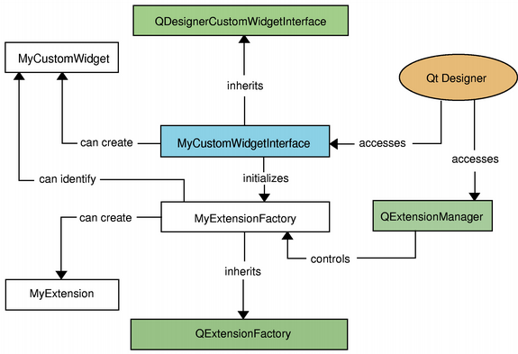

Creating and Using Components for Qt Designer
Creating Custom Widget Plugins
When implementing a custom widget plugin for Qt Designer, you must subclass QDesignerCustomWidgetInterface to expose your custom widget to Qt Designer. A single custom widget plugin is built as a separate library. If you want to include several custom widget plugins in the same library, you must in addition subclass QDesignerCustomWidgetCollectionInterface.
To provide your custom widget plugin with the expected behavior and functionality within Qt Designer's workspace you can subclass the associated extension classes:
The QDesignerContainerExtension class allows you to add pages to a custom multi-page container. The QDesignerTaskMenuExtension class allows you to add custom menu entries to Qt Designer's task menu. The QDesignerMemberSheetExtension class allows you to manipulate a widget's member functions which is displayed when configuring connections using Qt Designer's mode for editing signals and slots. And finally, the QDesignerPropertySheetExtension class allows you to manipulate a widget's properties which is displayed in Qt Designer's property editor.

In Qt Designer the extensions are not created until they are required. For that reason, when implementing extensions, you must also subclass QExtensionFactory, i.e create a class that is able to make instances of your extensions. In addition, you must make Qt Designer's extension manager register your factory; the extension manager controls the construction of extensions as they are required, and you can access it through QDesignerFormEditorInterface and QExtensionManager.
For a complete example creating a custom widget plugin with an extension, see the Task Menu Extension or Container Extension examples.
Retrieving Access to Qt Designer Components
The purpose of the classes mentioned in this section is to provide access to Qt Designer's components, managers and workspace, and they are not intended to be instantiated directly.
Qt Designer is composed by several components. It has an action editor, a property editor, widget box and object inspector which you can view in its workspace.

Qt Designer also has an object that works behind the scene; it contains the logic that integrates all of Qt Designer's components into a coherent application. You can access this object, using the QDesignerFormEditorInterface, to retrieve interfaces to Qt Designer's components:
- QDesignerActionEditorInterface
- QDesignerObjectInspectorInterface
- QDesignerPropertyEditorInterface
- QDesignerWidgetBoxInterface
In addition, you can use QDesignerFormEditorInterface to retrieve interfaces to Qt Designer's extension manager (QExtensionManager) and form window manager (QDesignerFormWindowManagerInterface). The extension manager controls the construction of extensions as they are required, while the form window manager controls the form windows appearing in Qt Designer's workspace.
Once you have an interface to Qt Designer's form window manager (QDesignerFormWindowManagerInterface), you also have access to all the form windows currently appearing in Qt Designer's workspace: The QDesignerFormWindowInterface class allows you to query and manipulate the form windows, and it provides an interface to the form windows' cursors. QDesignerFormWindowCursorInterface is a convenience class allowing you to query and modify a given form window's widget selection, and in addition modify the properties of all the form's widgets.
Creating User Interfaces at Run-Time
The QtDesigner module contains the QFormBuilder class that provides a mechanism for dynamically creating user interfaces at run-time, based on UI files created with Qt Designer. This class is typically used by custom components and applications that embed Qt Designer. Standalone applications that need to dynamically generate user interfaces at run-time use the QUiLoader class, found in the QtUiTools module.
For a complete example using QUiLoader, see the Calculator Builder example.
See also Qt Designer Manual and Qt UI Tools.